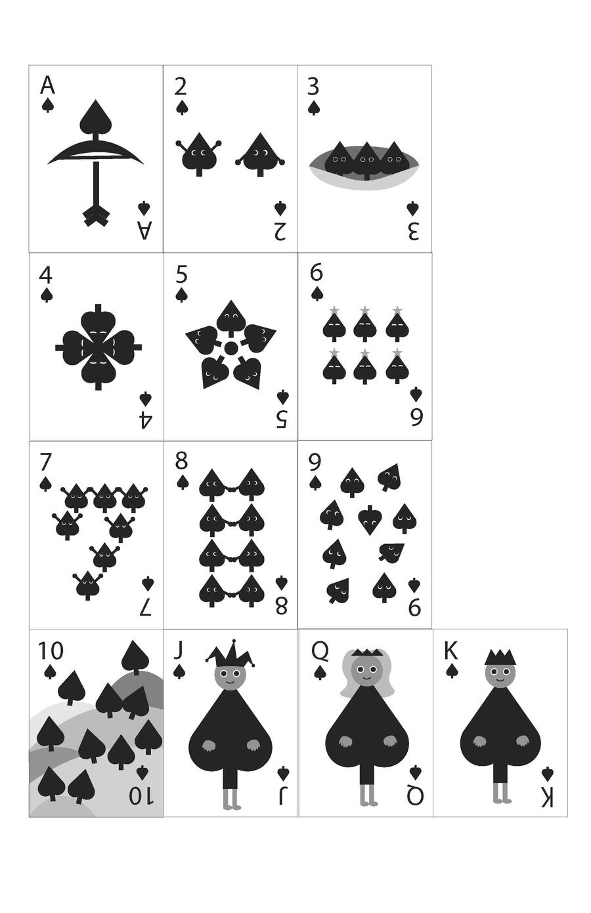
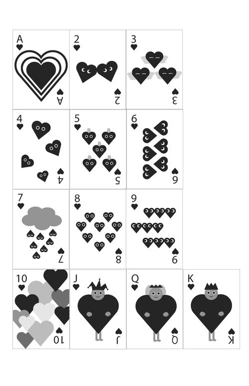
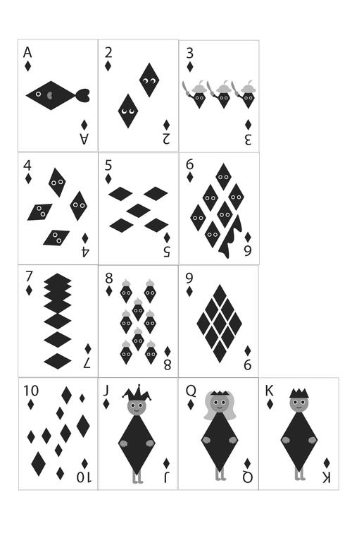
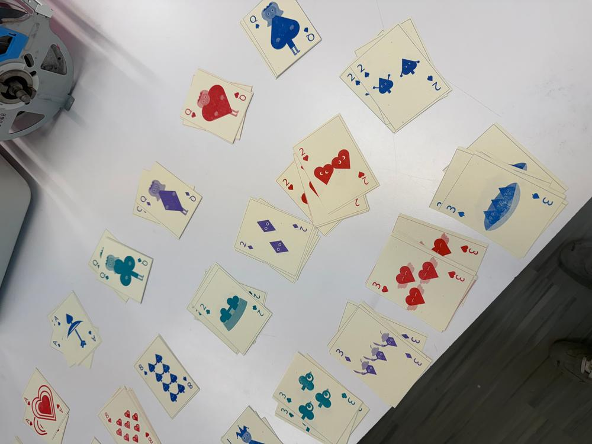
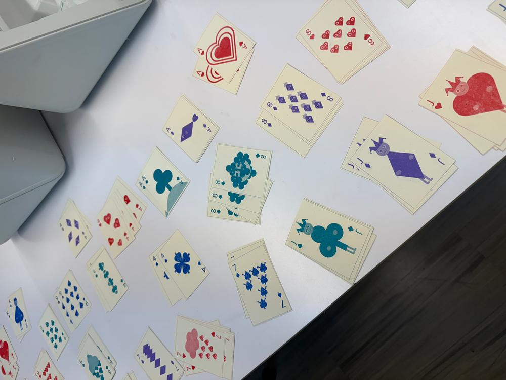
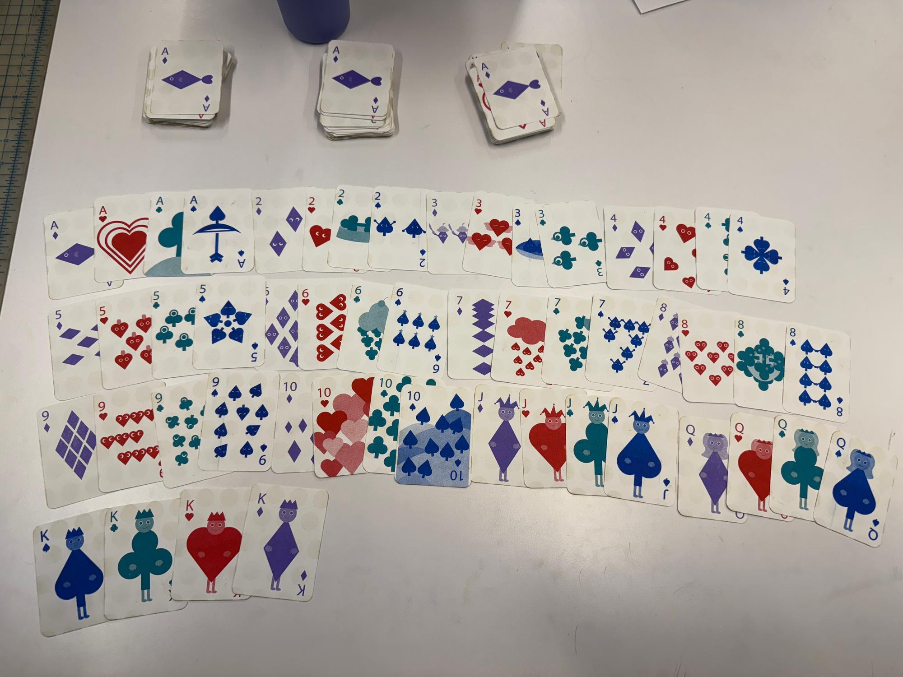
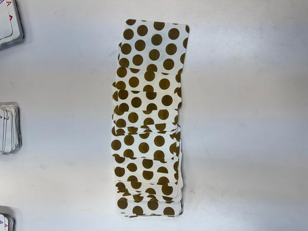
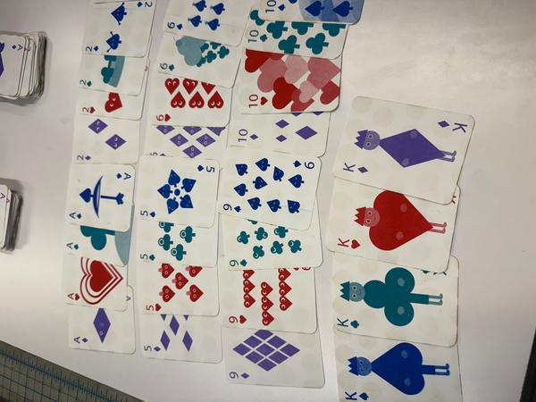

Playing Cards.
Riso-printed card deck
- Card Design
- Printmaking

This project explores the balance between structure and expression by redesigning a traditional 52-card playing deck.
Experimenting with Card Design
Creating My Playing Cards
I designed a full 52-card deck, creating a distinct design for each card while preserving the traditional structure and usability of standard playing cards.



Process
Initial Print
The first print focused on translating the designs into a physical format at standard playing card size.


Final Prints
Improved Designs and Reprint
After receiving feedback from my class and professor, I reprinted the deck with several key improvements.


